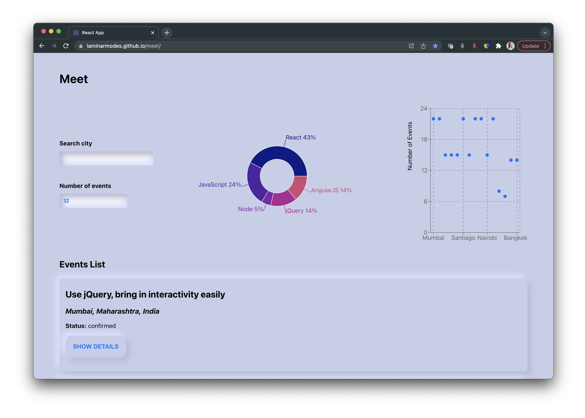

React Testing and Data Visualization
Meet
This was an exciting opportunity to explore, yet again, testing and data visualization through making a progressive web app called "Meet" which takes data from the Google calendar API and displays events taking place in different cities. The technical focus of this app covered the following:
- Serverless Functions (Creating Authentication Server using the serverless toolkit) and deploying onto AWS
- Unit Testing & Integration Testing
- User Acceptance Testing & End-to-End Testing
- Progressive Web Applications
- Data Visualization (using Recharts)
I also took this opportunity to experment with a less popular UI style, neumorphism, this time using an unconventional color.

Meet App Features
In the meet app, the user can view data for all cities, or specify a particular city (suggestions are automatically provided as they type). They can also indicate the number of events to be shown. Below the input, they will see a pie chart indicating the percentage of events having a particular genra as well as a scatter chart showing the number of events occuring by city.
The suggestion list uses flex-grid and is relatively positioned however it pushes down the rest of the elements on the screen rather than overlapping them. This is an issue that will be addressed.
If the user enters invalid input (for example, to show -3 events), an informative alert will be displayed. Notifications are also used to let the user know when they are using offline and that the data that is not up to date.
The event list is displayed using soft UI cards that include the event name, location, status, details and external link.
The 'show details' button initially takes on a convex shape that becomes concave when pushed in and reads 'hide details'. This UI style introduces some accessibility challenges, but is interesting to experiment with.
The link to the repository can be found here and the app can be tested and downloaded here. The app has been verified by google so no warnings should appear when accessing it.Finally, the user input fields have been updated so as not to take on a concave neumorphic appearance which might mislead the user to thinking it is a pushed-in button.